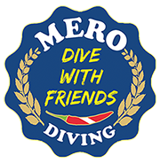

Bild gedrückt halten → „Bild sichern“ bzw. „Zu Fotos hinzufügen“.
Am Computer: Rechtsklick → „Bild speichern unter“.

Kein Bild geladen · Verarbeitung bleibt lokal im Browser
Vom Hausriff in der Cala Lliteras bis zur Kathedrale – hier tauchen wir. Details und Buchung auf mero-diving.com.
Treffpunkt täglich 09:15 & 14:15 Uhr · Bucht bis 10–18 m · Boot bis 30 m (je nach Brevet) · Bootsplätze in 5–15 Min.
Vom ersten Flossenschlag bis zum Profi – wir bilden dich aus (i.a.c. · SSI · CMAS · PADI). Voranmeldung empfohlen: telefonisch, per WhatsApp oder Mail.
Tauchbasis in der Cala Lliteras · seit 1969 · Dive with friends
Tauchbasis: Cala Lliteras · Carrer de Na Lliteras s/n · 07590 Cala Ratjada
Anschrift: C/ Llebeig 1-3 · 07589 Cala Ratjada · Mallorca
📞 +34 689 448 308
✉️ info@mero-diving.com
i.a.c. · SSI · CMAS · PADI
Kurse, Preise und Buchung findest du auf mero-diving.com.
Leihausrüstung bekommst du bei uns an der Basis – das hier ist deine persönliche Liste. Die Haken bleiben auf deinem Gerät gespeichert.
Im Notfall zuerst Guide oder Basis informieren. Diese Nummern funktionieren auch offline in der App:
🚨 Notruf (europaweit): 112
🩺 DAN Europe Taucher-Hotline (24h): +39 06 4211 5685
🤿 Mero Diving Basis: +34 689 448 308
Unwohl nach dem Tauchgang? Melde dich sofort bei uns – lieber einmal zu viel als einmal zu wenig.
Aus Fotos oder Dateien. JPG, PNG, HEIC, WebP. Das Original wird nie verändert – du speicherst eine neue Datei.
Am Computer: Foto einfach hierher ziehen.
Bild gedrückt halten → „Bild sichern“ bzw. „Zu Fotos hinzufügen“.
Am Computer: Rechtsklick → „Bild speichern unter“.